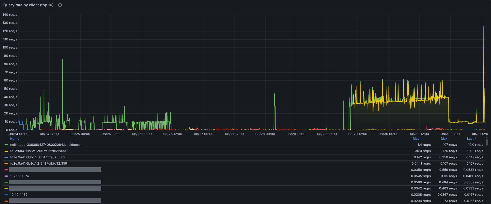
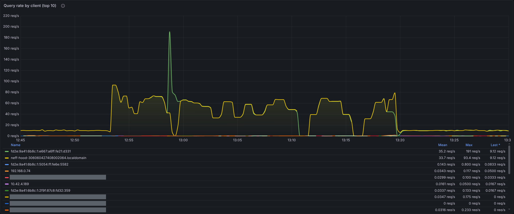
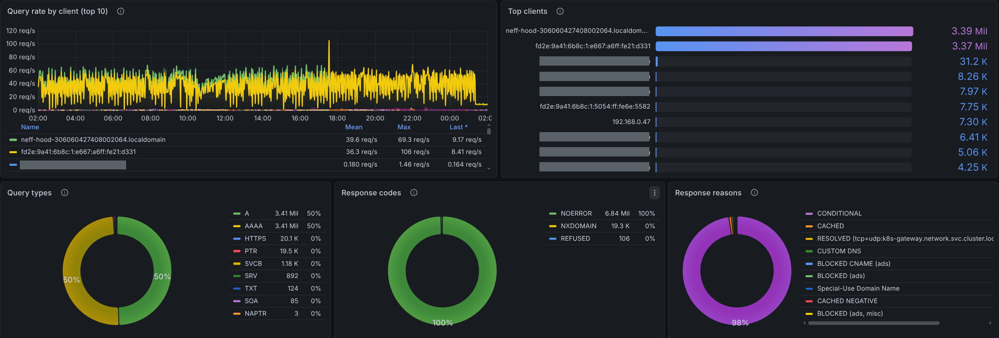
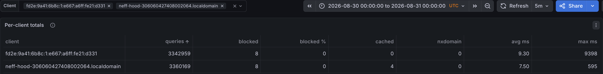
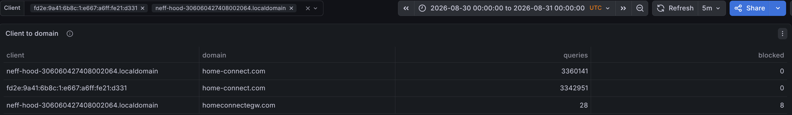
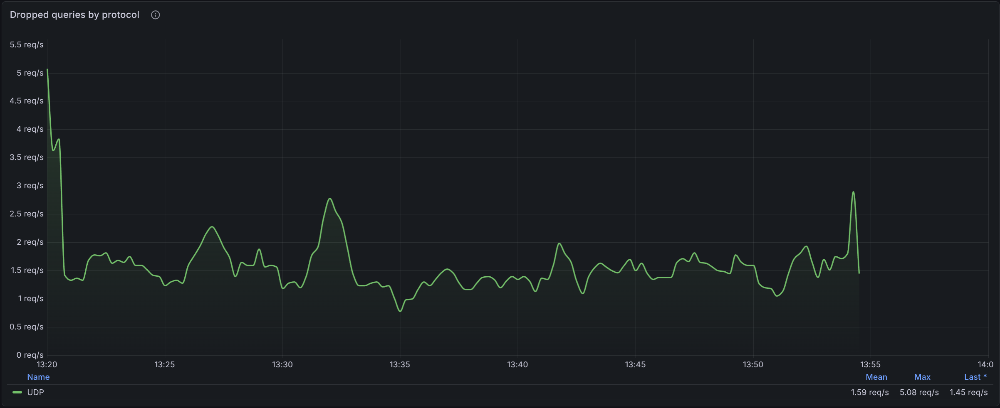

Measured on a private home network between 24 and 31 August 2026. This document records observed behaviour and measurement method only. It does not state a cause: we have no visibility into the appliance's software, and we make no claim about why the pattern occurs.
Appliance identification as shown in the Home Connect app on 31 August 2026. The client name the appliance announces on the network carries the same serial number, which is how its traffic was attributed.
The appliance is on an ordinary home LAN, 192.168.0.0/23, behind a single router
that provides DHCP and internet access. There is one resolver for the whole network, and every
client is pointed at it by DHCP:
192.168.1.53, and since 29 August also fd2e:9a41:6b8c:1::53;192.168.0.1, which in turn uses its own upstream resolver on the internet. Names belonging to the cluster itself go to an internal resolver instead;Nothing in that path rewrites or filters what the appliance asks for. The one exception is
deliberate and documented in this report: during measurement condition 2 a resolver rule
answered its query name locally, so that an AAAA address could be supplied.
Until then the network was IPv4-only from the resolver's point of view. IPv6 was enabled on
29 August at 10:15 UTC, and the resolver gained the additional address
fd2e:9a41:6b8c:1::53. From that minute the appliance appears in the graphs twice —
once as 192.168.0.25 and once as fd2e:9a41:6b8c:1:e667:a6ff:fe21:d331,
the same network interface — and it has been running its query loop over both address families
at the same rate ever since. This matters when reading the daily volumes: the roughly twofold
step on 29 August is the second address family being added by us, not the appliance sending
faster. The change from intermittent to continuous on the same day is not explained by it.
The appliance repeats one single query name, global.time.appliances.home-connect.com,
continuously, in four parallel streams:
A and type AAAA, in roughly equal numbers;192.168.0.25) and over IPv6 (from fd2e:9a41:6b8c:1:e667:a6ff:fe21:d331) — both addresses belong to the same network interface.Every query is answered. In the measurement windows below there were no timeouts, no
SERVFAIL, and no failed upstream lookups; the resolver replied NOERROR
to 100 % of them, most from its cache. The appliance nevertheless re-sends the same question
within milliseconds.
Separately, and at a negligible rate, the appliance sends about one reverse (PTR)
query every 20 seconds from each address. Those are answered NXDOMAIN. They are
noted for completeness and are not part of the flood.
Rates are counted by the resolver itself (Prometheus counter blocky_query_total,
per client address and query type). "Per stream" is the aggregate divided by the four streams.
| # | Condition | Window (UTC, 31 Aug unless noted) | Aggregate | Per stream |
|---|---|---|---|---|
| 1 | No rate limiting. Resolver returned the genuine records. | 30 Aug, 20:00, 5 min | 117.4 q/s | 29.2–29.5 q/s |
| 2 | No rate limiting. Resolver was configured to answer both A and AAAA with addresses, so the appliance received a full answer to every question. |
12:54–12:59 | 109.2 q/s | ≈27.3 q/s |
| 3 | No rate limiting. Genuine answers again: A with two addresses, AAAA empty (the zone has no AAAA record). |
13:06–13:19, sampled each minute | 85.9 q/s mean 31.5–132.1 q/s range | ≈21.5 q/s |
| 4 | Rate limiting active: 10 q/s per client address, excess queries silently dropped. | 13:24 onwards | 19.9 q/s + ≈1.3 q/s dropped | ≈4.97 q/s |
Conditions 2 and 3 differ only in what the appliance was told about
AAAA. Supplying an AAAA address did not reduce the rate; it was, if
anything, slightly higher. Under condition 4 the appliance sits exactly at the imposed
ceiling continuously — it keeps offering more queries than the ceiling allows and does not
slow down when they go unanswered.
| Source | DNS queries, last 24 h | Share |
|---|---|---|
| Neff hood (both addresses) | 4 002 742 | 97.6 % |
| Every other client on the network combined (≈40 devices, incl. workstations, phones, servers, other Home Connect appliances) | 97 125 | 2.4 % |
The 24-hour figure for the hood is itself suppressed — rate limiting was active for most of that period. On 30 August, with no limiting in place, the resolver counted 6 792 969 queries from this appliance in one day, and 12 702 796 over seven days. The busiest human-operated device on the network peaked at 5.6 q/s; the hood's unthrottled mean is roughly 15 times that peak, sustained around the clock.
| Date (UTC) | Queries from the hood | Share of the day above 10 q/s |
|---|---|---|
| 2026-08-24 | 168 880 | 8 % |
| 2026-08-25 | 527 819 | 23 % |
| 2026-08-26 | 330 818 | 26 % |
| 2026-08-27 | 15 376 | 0 % |
| 2026-08-28 | 76 776 | 2 % |
| 2026-08-29 | 3 881 562 | 64 % |
| 2026-08-30 | 6 792 969 | 100 % |
| 2026-08-31 (to 13:00, rate limited) | 1 067 645 | 100 % |
The pattern was intermittent between 24 and 28 August and continuous from 29 August onwards. Two things to read carefully here: the appliance was not touched at that transition, and part of the step is ours — IPv6 was enabled on 29 August at 10:15 UTC, after which the same loop is counted twice, once per address family. Halving the figures from 29 August for that reason still leaves roughly 1.9 million and 3.4 million queries per day against 15 to 528 thousand in the days before, so the shift from intermittent to continuous is not a counting effect.
The name resolves normally. Queried directly at the authoritative name server for the zone:
$ dig @ns-214.awsdns-26.com global.time.appliances.home-connect.com A ;; flags: qr aa rd; QUERY: 1, ANSWER: 2, AUTHORITY: 4 ;; ANSWER SECTION: global.time.appliances.home-connect.com. 300 IN A 166.117.100.221 global.time.appliances.home-connect.com. 300 IN A 166.117.209.92
$ dig @ns-214.awsdns-26.com global.time.appliances.home-connect.com AAAA
;; flags: qr aa rd; status: NOERROR; QUERY: 1, ANSWER: 0, AUTHORITY: 1
;; AUTHORITY SECTION:
appliances.home-connect.com. 900 IN SOA ns-214.awsdns-26.com.
awsdns-hostmaster.amazon.com. 1 7200 900 1209600 86400
A records carry a TTL of 300 seconds. The appliance re-requests them roughly 21 times per second.AAAA record for this name. The authoritative answer is an empty NOERROR with an SOA in the authority section, i.e. a negative answer that is cacheable for 900 seconds.To rule out the empty AAAA answer as the trigger, we made the local resolver
answer AAAA for this name with a real address for the duration of condition 2
above. The query rate did not fall. That is an observation, not an explanation.
blocky_query_total, blocky_response_total, blocky_rate_limit_drops_total), labelled per client address and query type, scraped at 30-second intervals and retained in VictoriaMetrics. The per-query log is stored separately in TimescaleDB.neff-hood-306060427408002064; the IPv6 address is its interface identifier, and the MAC above is derived from that EUI-64 (e667:a6ff:fe21:d331 → e4:67:a6:21:d3:31).Slots to be filled from the resolver's Grafana dashboards. Each caption states the exact panel and time range so the figure can be reproduced.



A and 3.41 million
AAAA — 50 % each — with every other type on the network (HTTPS, PTR, SVCB, SRV,
TXT, SOA, NAPTR) together under 42 thousand. Response codes: 6.84 million
NOERROR, 100 % after rounding, against 19.3 thousand NXDOMAIN and
106 REFUSED — the appliance's queries were all answered successfully.
Query rate: the appliance's two addresses averaged 39.6 and 36.3 q/s across the day and
peaked at 69.3 and 106 q/s. The names of the household's other devices are blanked out in
both panels for privacy; their query counts and bars are untouched.
NXDOMAIN, and an average response time of 7.50 and 9.30 ms.
home-connect.com — 3 360 141 and
3 342 951 times, none of them blocked. Those two figures are the totals from Figure 4
minus 28 and 8 respectively, and the remainder is visible as the third row: 28 queries for
homeconnectegw.com. So 99.999 % of everything this appliance asked the
resolver in 24 hours was a single registrable domain, and within it a single name — during
condition 2 a resolver rule matching only
global.time.appliances.home-connect.com answered 109.0 of the 109.2 q/s then
arriving.For completeness, and because it is visible in Figure 5: the appliance also sent 28 queries
for homeconnectegw.com from its IPv4 address in those 24 hours, 8 of which were
blocked; Figure 4 shows the same count of 8 blocked for the IPv6 address. Those blocks come
from a third-party advertising and tracking blocklist we run on this resolver, not from a
deliberate block of Home Connect infrastructure. It concerns 16 queries out of 6.7 million and
is unrelated to the behaviour reported here, but we mention it so the figures are complete.

We are asking for a firmware fix for this appliance's DNS behaviour. Specifically, so that the appliance:
AAAA answer for a name that has no AAAA record;In its current state one appliance produces around 7 million DNS queries per day and 97.6 % of all DNS traffic on this network. We currently limit it to 10 queries per second per address at the resolver, which caps the damage but leaves the appliance in a permanent retry state and means part of its traffic is dropped.
The appliance is identified at the top of this report (E-Nr. D85IFN1S0/06, FD 0606, serial 306060427408002064, software version 2444479). We can supply, on request: the full per-query log for any period listed above, and a packet capture of the appliance's DNS traffic.